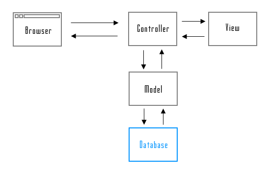
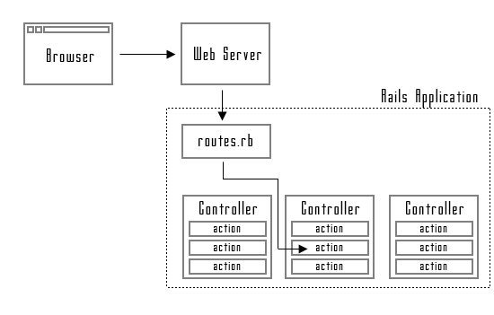
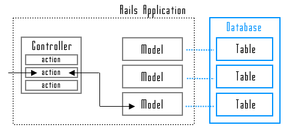
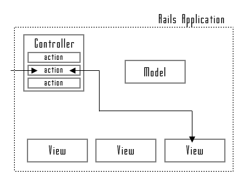
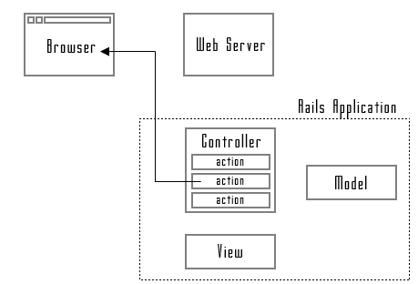

RailsにおけるMVC(モデル/ビュー/コントローラ)
Railsを使ったアプリケーションを開発する場合、モデル/ビュー/コントローラと呼ばれるものが出てきます。
モデル/ビュー/コントローラは頭文字を取ってMVCアーキテクチャーと呼ばれるもので、アプリケーションをモデル(データを扱う部分)、ビュー(ユーザーに見える結果を作る部分)、コントローラ(ユーザーからの要求を処理し、モデルやビューと連携を行なう)に分割して作りあげるものです。

上図がMVCの基本的な構造です。それではRailsアプリケーションの場合、MVCがどのように使われていて、そして利用者からのリクエストをどのように処理しているのかについて確認しておきます。
ルーティングとコントローラ
利用者がブラウザ経由でRailアプリケーションにリクエストを送信すると、まずはWebサーバでそのリクエストを受け取ります。リクエストがRailsアプリケーションに関することだった場合、WebサーバからRailsアプリケーションへリクエストが回されてきます。
利用者からのリクエストはURLとして届きます。届いたURLを分析し、どのコントローラに含まれるアクションを実行すればいいのかを判断する時に使われるのが「routes.rb」ファイルです。このファイルにはどんなURLだった時はどのコントローラのどのアクションを呼び出せばいいのが列挙されています。

Railsアプリケーションには通常複数のコントローラが作成されています。また各コントローラの中には複数のアクションが定義されています。例えばRailsアプリケーションの中には「スケジュール」コントローラと「アドレス帳」コントローラがあり、「スケジュール」コントローラの中に「登録」アクションと「削除」アクションがあるといった感じです。
モデル
リクエストが例えば登録済みのデータがみたいといったものや、新しいデータを格納して欲しいといったものの場合、データベースとのやり取りが発生します。
Railsアプリケーションの場合、使用しているデータベースのテーブル毎にモデルが用意されています。利用者からのリクエストで呼び出されたアクションは、モデルを介してデータベースとのやり取りを行い、データを取得したり新しいデータを格納したりします。

ビュー
モデルを介して取得したデータを受け渡し用の変数にセットしビューを呼び出します。ビューは変数を介して渡されたデータを使ってHTML文書を作成しコントローラへ返します。

ビューはRailsアプリケーションの中に複数用意されています。1つ1つはHTML文書の雛形のようになっており、与えられたデータから文書を作成します。通常はアクションに対応するビューが一つ用意されているので自動的にそのビューが呼び出されて利用者へ返す文書を作成するのですが、呼び出すビューを指定することも可能です。
結果を返す
ビューによって作成されたHTML文書を受け取ったコントローラは、そのデータをリクエストを送信してきた利用者へ返します。

最終的に利用者が見ているブラウザ上に返されてきたHTML文書が表示されることになります。
以上がRailsアプリケーションがリクエストを受けた時の処理の流れとなります。次のページ以降でコントローラやモデル、ビューをどのように記述していくのかについて解説しますが、今作成しているものがRailsアプリケーションの中でどの役割を果てしているのかが分からなくなった場合はこのページを参照してみて下さい。
( Written by Tatsuo Ikura )

著者 / TATSUO IKURA
初心者～中級者の方を対象としたプログラミング方法や開発環境の構築の解説を行うサイトの運営を行っています。